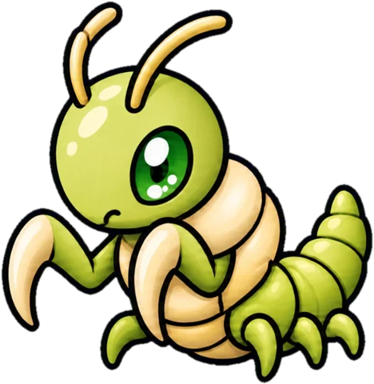

Tap a stage to read its story.
Sproutis is a small, lime-green caterpillar-like creature with round black eyes and stubby little legs it rows in cheerful waves. Its plump segmented body glows faintly at the tail end like a living nightlight. It tumbles through Verdant Valley's ground-level grasses, nibbling the marked leaves that the guardians plant. Sproutis always travels in the direction of the loudest voice it can hear - adventurers use this to find one another across tall grass.
Field note: Sproutis navigates entirely by sound; blindfold it and it crawls straight toward the nearest speaking voice without hesitation.
Verdant Valley. Sproutis and its family are found in the Verdant Valley. See everyone who lives there.
Share a Bond Food that matches its types to become friends. Sproutis loves:
A Bond Food is not a trick. It joins your spirit with the Kimuro's spirit, and only when it chooses you.
Print the Kimuro adventure packs: mazes, cards, a board game and Bond Mark medals.
See the printable packs